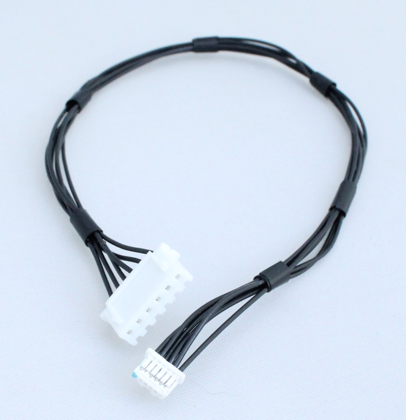
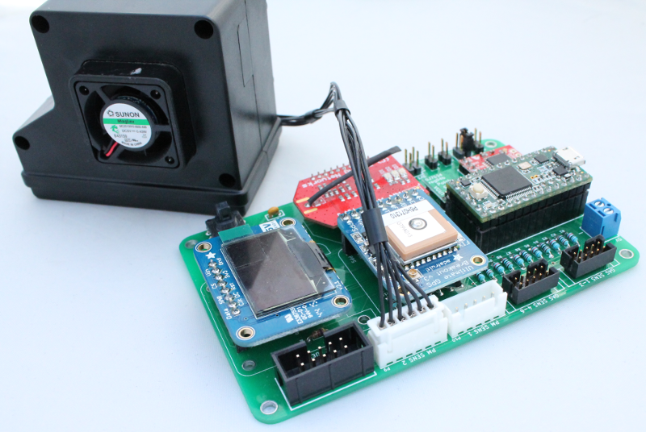

Alphasense Particulate Monitor (OPC-N2)¶

- The Optical Particle Monitor (OPC-N2) measure PM1, PM2.5 and PM10.
- More information on the Particulate Sensor can be found on the Alphasense website: http://www.alphasense.com/index.php/products/optical-particle-counter/
OPC-N2 Custom cable¶
Make a custom cable for connecting the Particulate monitor to the board
| Qty | Description | Vendor | Part # |
|---|---|---|---|
| 1 | Wire, 28 AWG, Black | Digikey | W2628B-50-ND |
| 1 | Connector recept, 6 pos, 1 mm | Digikey | WM7919-ND |
| 6 | Terminal crimp for use with 1mm connector | Digikey | WM7933-ND |
| 1 | Connector recept, 6 pos, 2.5 mm | Digikey | 455-2218-ND |
| 6 | Terminal crimp for use with 2.5 mm connector | Digikey | 455-2261-1-ND |
Other tools you will need to make the cable: hand crimp e.g. Molex hand crimp.

Connecting to the board¶
- The Safecast Air Board has a designated header (P9) for the OPC-N2 particulate monitor.
- Connect the OPC-N2 custom cable to the front of the OPC-N2 monitor and the P9 header on the Safecast Air Board.

